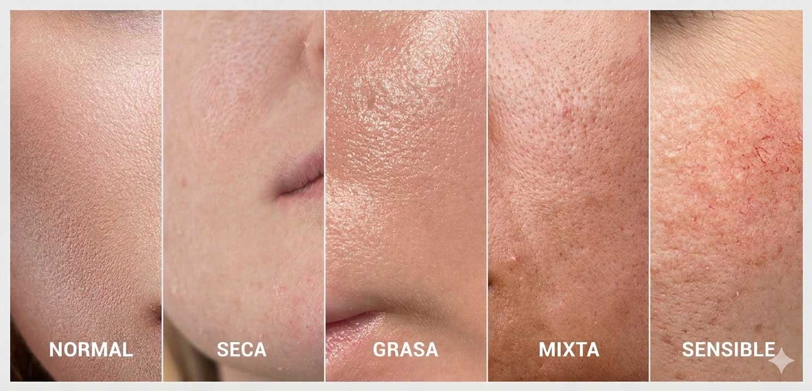

La clasificación de los tipos de piel se basa en características fisiológicas como la producción de sebo, la hidratación, la sensibilidad y la textura. Conocer el tipo de piel es fundamental para seleccionar los cosméticos adecuados y mantener la función barrera en equilibrio.

Es una piel equilibrada, con producción de sebo y agua adecuada. Presenta textura uniforme, poros poco visibles y buena luminosidad. No suele presentar sensibilidad ni imperfecciones.
Se caracteriza por una baja producción de sebo y una menor capacidad para retener agua. Puede presentar tirantez, descamación, aspereza y sensación de incomodidad. Es más propensa a irritaciones y envejecimiento prematuro.
Presenta una producción elevada de sebo. Tiene brillo visible, poros dilatados y tendencia a imperfecciones como comedones y pápulas.
Combina características de piel grasa en la zona T (frente, nariz y mentón) y piel normal o seca en mejillas. Es el tipo más frecuente.
Reacciona fácilmente a estímulos externos como frío, calor, cosméticos o estrés. Puede presentar enrojecimiento, picor, ardor o sensación de calor.
El tipo de piel no es estático; puede variar según: